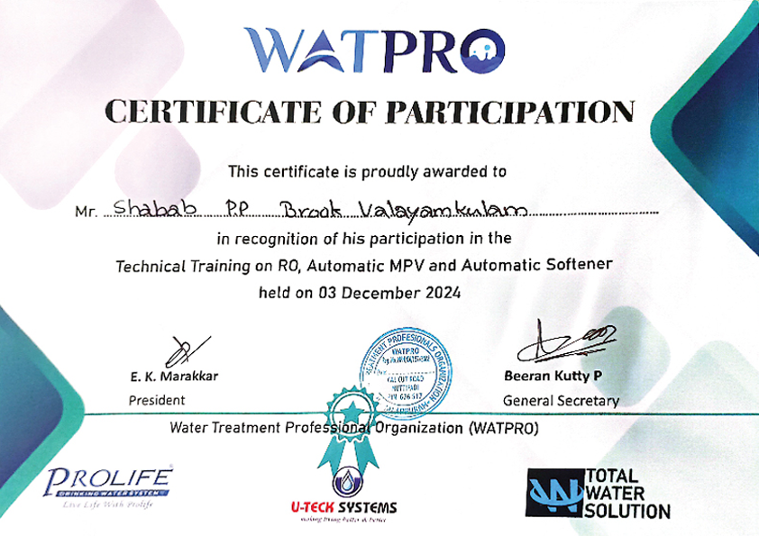
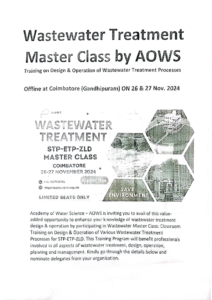

About Us
Brooks: As True as Water
There is nothing as graceful as water, whether it’s soothing bath after a heavy workload or a few drops grazing on our parched lips. But, to pass pristine, pure water over to people without impurities at a time when almost everything is contaminated, one requires effective water management skills and resources. We could witness how a Master Artist guides his source of bounty through the brooks in a forest. An efficient water purifying company should at best be like a brook, a small river in the forest. Hence, the Brook Water Purifiers which was started in 2006, one year and a decade after the mother company visualised it.
As a water treatment company, Brook has been sectioned off into three services: water filter service for domestic, commercial and industrial needs; green energy service for solar water heating; entertainment service for hygienic swimming pools. In all these service, the company sticks to the policy of maximum quality. Quality is ensured in Brook’s services and products through the best customer care operations and highly talented technicians and staffs. We don’t brook complacency and inefficiency.
A company should be appraised not by the words it uses to speak of itself. We must have its achievements as the real touchstone. In 2012, the Brook Water Purifier was selected for the Kerala Entrepreneur Programming Award, which it received from Kerala Finance Minister KM Mani. Our Sagacious customers will attest to our words: we have served Brahmakumari Ashramam and VKC footware owner Muhammad Koya in Calicut; the Ayurvedha Medical College and Varkala Resorts in Thriuvananthapuram; and the Chavakkad Sea Water Project and the apartment of the owner of Oberon Mall in Trichur.
Awards

Certificates
